Blog
Introduction to ASP.NET & MVC Request Life Cycle
ASP.NET Request-Response Architecture
- ASP.NET MVC is a framework for developing dynamic Web applications using the .NET Framework.
- Prior to ASP.NET MVC, dynamic Web applications based on the .NET Framework were developed using ASP. NET Web pages and ASP.NET Web Forms.
- ASP.NET is a server-side technology that enables you to create dynamic Web applications using advanced features, such as simplicity, security, and scalability, which are based on the .NET Framework.
- ASP.NET applications comprises of .aspx Web pages that combine both client-side and server-side scripts to build dynamic Web sites.
- When request come from client to the server a lot of operation is performed before sending response to the client. This is all about how IIS Process the request.
What is Web Server?
- When we run our ASP.NET Web Application from visual studio IDE, VS Integrated ASP.NET Engine is responsible to execute all kind of asp.net requests and responses.
- The process name is “WebDev.WebServer.Exe” which actually take care of all request and response of a web application which is running from Visual Studio IDE.
- Now, the name “Web Server” comes into picture when we want to host the application on a centralized location and wanted to access from many locations.
- Web server is responsible for handle all the requests that are coming from clients, process them and provide the responses.
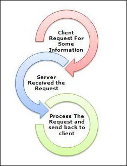
What is IIS?
- IIS (Internet Information Server) is one of the most powerful web servers from Microsoft that is used to host your ASP.NET Web application.
- IIS has its own ASP.NET Process Engine to handle the ASP.NET request. So, when a request comes from client to server, IIS takes that request and process it and send response back to clients.
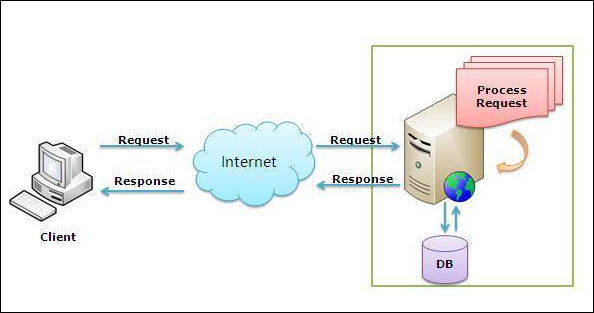
Worker Process
- Worker Process (w3wp.exe) runs the ASP.Net application in IIS. This process is responsible to manage all the request and response that are coming from client system.
- ll the ASP.Net functionality runs under the scope of worker process. When a request comes to the server from a client worker process is responsible to generate the request and response.
- In a single word we can say worker process is the heart of ASP.NET Web Application which runs on IIS.
- Application Pool: Application pool is the container of worker process. An application pool is used to separate sets of IIS worker processes that share the same configuration.
- An application pool enables a better security, reliability, and availability for any web application.
- The worker process serves as the process boundary that separates each application pool so that when one worker process or application is having an issue or recycles, other applications or worker processes are not affected.
- This makes sure that a particular web application doesn’t not impact other web application as they are configured into different application pools.
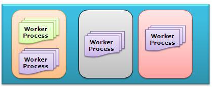
- Application Pool with multiple worker process is called “Web Garden”.
- If we look into the IIS 6.0 Architecture, we can divided them into Two Layer
- Kernel Mode
- User Mode
- Now, Kernel mode is introduced with IIS 6.0, which contains the HTTP.SYS. So whenever a request comes from Client to Server, it will hit HTTP.SYS First.
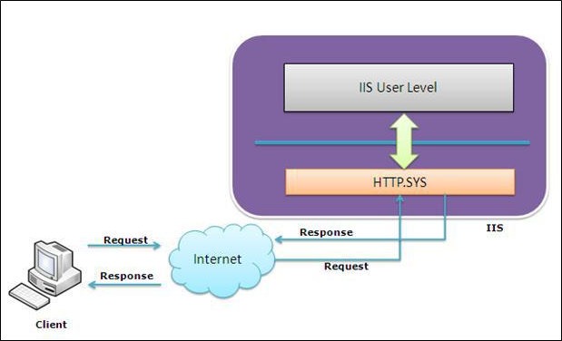
- Now, HTTP.SYS is Responsible for pass the request to particular Application pool. Now here is one question, How HTTP.SYS comes to know where to send the request? This is not a random pickup.
- Whenever we create a new Application Pool, the ID of the Application Pool is being generated and it’s registered with the HTTP.SYS.
- So whenever HTTP.SYS Received the request from any web application, it checks for the Application Pool and based on the application pool it send the request.
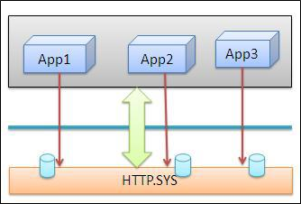
- Till now, Client Requested for some information and request came to the Kernel level of IIS means at HTTP.SYS. HTTP.SYS has been identified the name of the application pool where to send.
- In User Level of IIS, we have Web Admin Services (WAS) which takes the request from HTTP.SYS and pass it to the respective application pool.
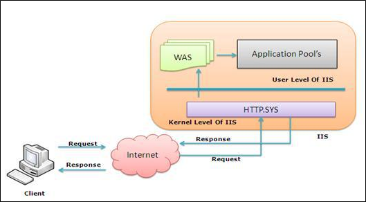
- When Application pool receives the request, it simply pass the request to worker process (w3wp.exe).
- The worker process “w3wp.exe” looks up the URL of the request in order to load the correct ISAPI extension. ISAPI extensions are the IIS way to handle requests for different resources.
- Once ASP.NET is installed, it installs its own ISAPI extension (aspnet_isapi.dll) and adds the mapping into IIS.
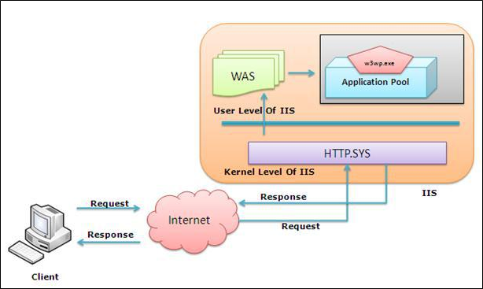
- When Worker process loads the aspnet_isapi.dll, it starts an HTTPRuntime, which is the entry point of an application. HTTPRuntime is a class which calls the ProcessRequest method to start Processing.
- When this methods called, a new instance of HTTPContext is been created. This is accessible using HTTPContext.Current properties.
- This object still remains alive during life time of object request. Using HttpContext.Current we can access some other objects like Request, Response, Session etc.
- After that HttpRuntime load an HttpApplication object with the help of HttpApplicationFactory class.. Each and every request should pass through the corresponding HTTPModule to reach to HTTPHandler, this list of module are configured by the HTTPApplication.
- Now, the concept comes called “HTTPPipeline”. It is called a pipeline because it contains a set of HttpModules (For Both Web.config and Machine.config level) that intercept the request on its way to the HttpHandler.
- HTTPModules are classes that have access to the incoming request. We can also create our own HTTPModule if we need to handle anything during upcoming request and response.
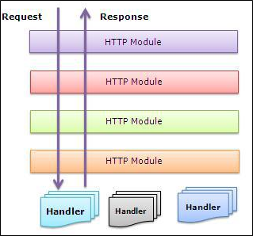
- HTTP Handlers are the endpoints in the HTTP pipeline. All request that are passing through the HTTPModule should reached to HTTPHandler.
- Then HTTP Handler generates the output for the requested resource. So, when we requesting for any aspx web pages, it returns the corresponding HTML output.
- All the request now passes from httpModule to respective HTTPHandler then method and the ASP.NET Page life cycle starts. This ends the IIS Request processing and starts the ASP.NET Page Lifecycle.
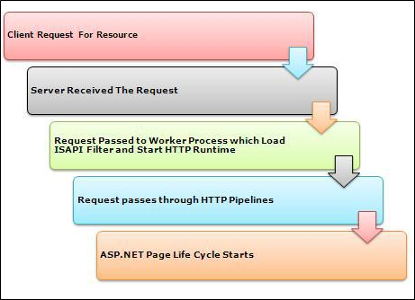
Conclusion
- When client request for some information from a web server, request first reaches to HTTP.SYS of IIS. HTTP.SYS then sends the request to respective Application Pool.
- Application Pool then forward the request to worker process to load the ISAPI Extension which will create an HTTPRuntime Object to Process the request via HTTPModule and HTTPHanlder. After that the ASP.NET Page Lifecycle event starts.
MVC Request Life Cycle
- Life cycle of MVC request is a series of steps involved in processing client request. Regardless of technology and platforms almost all the web frameworks have one or other type of Request life cycle and MVC is no different.
- Understanding the life cycle of any web framework helps better leverage the features for processing requests.
- The entry point of MVC Request life cycle is URL Routing module, the incoming request from IIS pipeline is handed over to URL Routing module which analyses the request and looks up Routing table to figure out which controller the incoming request maps to.
- Routing Table is a static container of routes defined in MVC application with corresponding controller action mapping.
- If the route is found in the routing table MVCRouteHandler executes and brings the instance of MVCHttpHandler. Together they act as a gateway into the MVC Framework.
- MVC handler begins initializing and executing controller. The MVCHttpHandler also takes of converting route data into concrete controller that is capable of serving the request.
- MVC handler does all this with the help of MVC Controller factory and activator which are responsible for creating an instance of the controller.
- This is also the place where the Dependency Injection is performed if the application has been designed to invoke parameterized controller constructor and satisfy its dependencies.
- After the controller instance is created the next major step is to find and execute the corresponding action. A component called ActionInvoker finds and executes the action defined in routing table.
- Before the action method is called model bindings takes place which maps data from http request to action method parameters.
- After the model binding, action filters are invoked which includes OnActionExecuting filter.
- This is followed by action execution and Action Executed filter execution and finally preparing Action Result.
- Once the Action method has been finished executing the next step is Result execution. MVC separates the action declaration from Result execution.
- If the Result from action execution is view, then depending upon configuration, ASPX or Razor view engine will be called to find and render the html view as a response of http request. If the result was not view then it’s passed as-is to http response.
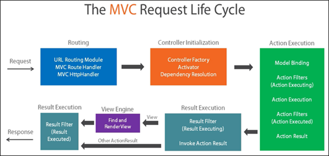
Webforms and MVC
- Service to a request in Web forms life cycle corresponds to serving a physical file on the disk. However this is not the case in MVC. IN MVC, there is not real concept of serving files from the disk, rather Controller action are executed to render a view to the user.
- Despite the differences both the web forms and MVC requests implement through HttpHandler. In web forms each page is derived from IHttpHandler interface and request is served more directly. MVC controllers are also derived from HttpHandlers.
- From a higher level, MVC is just another way to manage request from ASP.net platform. One can create their own pipeline and build a framework like MVC or web forms on their own.
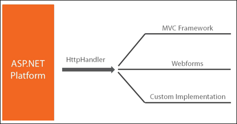
Application Life Cycle
- MVC application life cycle contains two application level events that are associated with start and end events of the application.
- Application start fires when the application is brought to life by a very first request to the application. Application end event is fired when application has been shut down.
- It’s important to understand application life cycle events to get a better understanding on how MVC life cycle starts. So far we have seen that URL Routing module is the starting point for MVC application that has a collection of predefined routes to map from.
- Now, the question here is how does URL routing handler gets this information from? The answer is simple, using Application start event.
- MVC applications provide these events in Global.asax file which contains all the application level events. All the prestart things are managed in the application start event.
- MVC Application_Start event is:
- An event that fires when first request is received
- Can be used to run initial configuration and settings code
- The event takes care of registering all areas of MVC application, installing global filters, adding routes and bundles
Register Routes
- Since Application_start event is the first event that gets called when application receives its very first request, all the pre application tasks like routing takes place here.
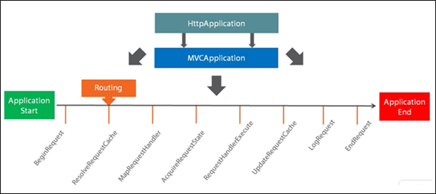
PreApplicationStart:
- PreApplicationStart is another option at the assembly level to register something before the application starts. It could be used to run some initial configuration code or register modules or any other code that needs to be executed before the application starts.
HttpHandlers
- HttpHandlers are classes that implement IHttpHandler and generate a response to HttpRequest. There could be httpHandler re-assignment in a life cycle of a request but only one http handler executes and provides response.
- There are two sets of events in the MVC request life cycle that concerns HttpHandlers, [MapRequestHandler and PostMapRequestHandler] and [RequestHandlerExecute and PostRequestHandlerExecute].
- MapRequestHandler and PostMapRequestHandler are the events in the life cycle which determines the httpHandler responsible for executing the request. Only the selection happens during this time.
- RequestHandlerExecute and PostRequestHandlerExecute are the life cycle events that actually executes the htttp handler determined in the earlier phases of request life cycle.
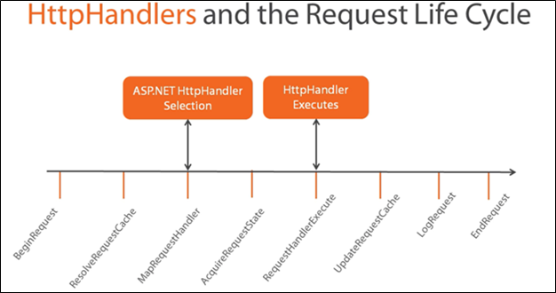
Creating an HttpHandler
- Create a class that implements IHttpHandler interface
- Register the HttpHandler through code or web.config
- IHttpHandler exposes two members:
- IsReusable
- ProcessRequest()
- SampleHandler.cs
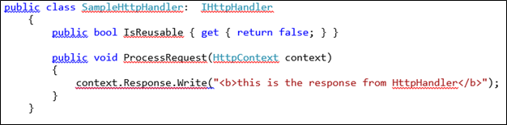
HTTPModules
- HttpModules are classes that implement IHttpModule interface and are designed to respond to Life cycle events.
- In a given Http life cycle, multiple http modules can respond to one single request and can also hook into multiple life cycle events.
- So they are not tied to any specific event, rather they can act at several places during the life cycle and expose multiple development possibilities.
- One of the advantage HttpModules bring is the reusability, modules written once can be reused any several application across frameworks.
- Features such as logging and authentication are best examples of wrapping things up in a HttpModule. One can also do the all these things possible in HttpModule in a Global.asax file, but that won’t achieve reusability and abstraction.
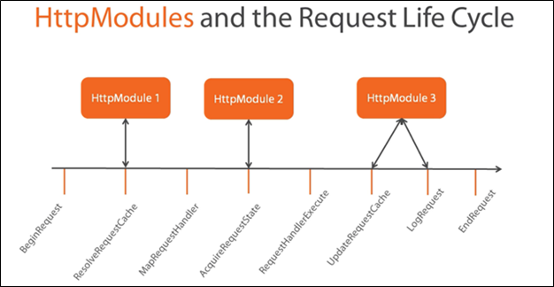
Creating a HTTPModule
- Implement the IHttpModule interface
- Register the HttpModule through code or config
- IHttpModule exposes two members:
- Init ( )
- Dispose ( )
HttpModule and HttpContext
- HttpModule and HttpContext work with each other in the life cycle of a request to serve and achieve the goals of a module.
- For instance, HttpModule can populate the user information and populate UserInfo object inside HttpContext for applications read its value and proceed accordingly.
- HttpModules takes advantage of hooking within the lifecycle events, even before the ASP.net MVC framework starts taking control of request. In fact, HttpModules can act early on to request in the very first event itself, “Begin Request”, much before the MVC life cycle takes over.
- This gives HttpModules an edge over MVC requests because you could respond to a request early on and take appropriate actions well before.
- This can have some serious implications, there are certain things which HttpModules can do really better, while avoiding the MVC framework completely.
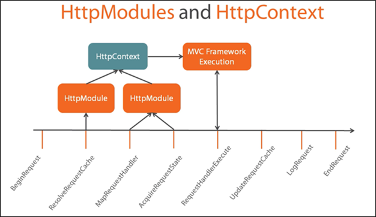
Comparing HTTPHandlers and HTTPModules
- Many HttpModules can service one request, however only one HttpHandler can service a request.
- HpptModules are primarily used to modify and support requests through services, however HttpHandlers are used to generate a response that is sent back to browser using an HttpHandler.
- HpptModules are implemented through IHttpModule interface, and HttpHandlers are implemented through IHttpHandler interface
- Both HttpModule and HttpHandler can be registered through code or config file.
- HttpModules and deigned to integrate with any of the life cycle events, however HttpHandlers are generally concerned with events related to mapping and execution.
MVCRouteHandler and MVCHandler
- UrlRouting module is a special module that contains PostResolveRequestCache event that actually matches the incoming request to routing table and executes routing handler for it.
- Routing handler is simply a class that implements IRouteHandler interface and exposes one method “GetHttpHandler” and return MvcHandler to execute further. MvcHandler is a standard HttpHandler which exposes two methods, IsReusable and ProcessRequest. The ProcessRequest inside the MvcHandler is the entrance into the MvcFramework.
Controllers
- Controllers and actions are the two very important components in MVC that every developer work with. A controller takes care of orchestrating relationships between views and models.
- Controllers are nothing complex but a class that implements IController interface and exposes one method “Execute ()”. This execute method actually kicks the execution of controllers in the request life cycle.
- At a high level, the job of a MvcHandler is to generate a response by executing a controller. But a lot goes under the curtain so let’s try to understand how the controller is selected, instantiated and executed to serve the request.
- MvcHandler doesn’t create an instance of controller right away, rather takes help from several other important classes to perform this.
- MvcHandler first calls a method ProcessRequestInit() which calls a controller factory to select a controller using the route data provided.
- Once the selection is performed by controller factory, Controller Activator creates an instance of requested controller using Dependency Resolver.
- If no dependency resolved was found then Controller Activator manually creates an instance of controller and returns it for execution.
- Once the controller has been initialized MvcHandler calls controller.Execute() method to begin processing execution. Following diagram depicts the control flow.
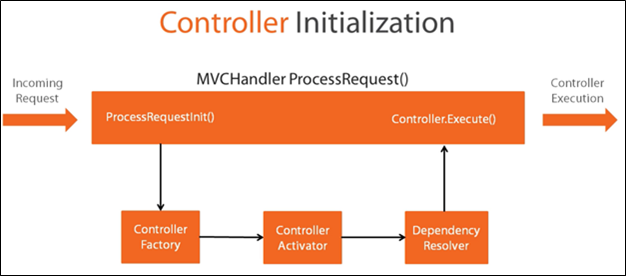
Controller Factory
- Controller factory is used directly by MvcHandler to get the Controller to execute. Its primary responsibility to find the appropriate type of controller to serve the request.
- At the heart of ControllerFactory is the interface IControllerFactory that a default controller factory implements.
- You could add your own custom factory by implementing IControllerFactory interface. The interface exposes three main methods:
- CreateController for creating controller, it should return a type that implements IController.
- GetControllerSessionStateBehavior determines how session is handled for a given controller.
- ReleaseController for releasing any resources factory is holding onto.,
- MVC framework provides a robust controller factory out-of-the box, called as “DefaultControllerFactory”. This default factory handles a lot of low level work for getting and creating an instance of desired controller.
- For instance, if the incoming request is myAPP/Order/22, then controller factory would create an instance of OrderController or whatever is being specified in routing data.
- The default controller also has access to “Dependency Resolver”, which helps in resolving dependencies of controller.
- This is the place where custom dependency resolvers fits in to give way for IoC container to come in and resolve dependencies like parameterized contractors etc.
Action Method Execution
- Once the Controller has been chosen and initialized execution start, this includes choosing an Action using ActionInvoker’s Select method.
- Action invoker selects appropriate method using route data and method names to choose best fit method.
- Once the selection is done, Authentication filters fires to ensure that current user is authenticated. If the authentication fails then a challenge is sent back to the use, which could involve redirect user to a login page.
- If the authentication passes, request moves ahead with authorization. Once again, the same process happens, if the user is not authorized, then a challenge is sent back to browser, otherwise request pipeline moves.
- Once the authentication and authorization are passed, request moves forward with identifying parameters required to pass in to selected action.
- This process is called as Model Binding. Model binding collects data from query string, route data and request to generate objects required by Action method.
- The process correctly maps the parameters to objects and also takes care of converting incoming types to correct types required by Action method.
- Once the model binding has been done, Action filters kick in. before an action method is being called, OnActionExecuting filter is executed and any code placed inside this filter gets executed.
- Once the OnActionExecuting has been executed, Action method execution starts. Once the Action method has been executed and a response has been generated, another filter OnActionExecuted gets executed.
- All the steps involved in Action execution are very much extensible and that makes MVC a great framework to work with.
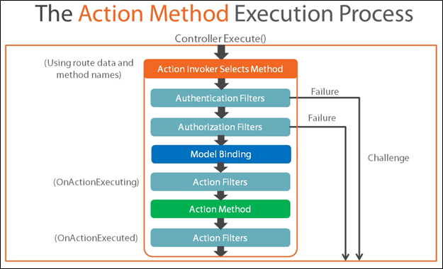
Action Invoker
- Controller’s execution is really empowered by ActionInvoker’s select method in the sense that it can select appropriate action in variety of ways.
- Like many other MVC framework components Action Invoker also implements a simple interface “IActionInvoker” that exposes one method InvokeAction.
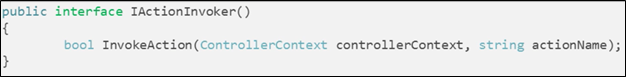
- The method takes two arguments, controllerContext and actionName that are used to select and invoke appropriate action.
- In almost all the cases you don’t need to implement this interface because MVC by default provides a powerful implementation, ControllerActionInvoker. Further, default behaviour of controller action invoker can be customized using extension points.
Action Selectors
- Action Selectors select an action based on Route Data and matches the method name. Sounds simple, but there is more to it. If you have worked with Http methods before, you might recognize that MVC provides Action methods with http attributes.
- One can decorate action methods with these http attributes to specify how this method should be invoked. For example, it ensure that a http GET request can’t invoke http POST method, just because the name matches.
- Some common Action selectors that MVC provides are HttpGet, HttpPost, AcceptVerbs, ActionName, NonAction and Custom
- Selecting an action is a multi-step process. First off, MVC determines which methods are eligible, only public non-static, non-special methods (e.g. constructors, ToString() are excluded) are considered in the Action method selection. Then, the framework matches signature of the methods with incoming request.
- If any valid method, with signatures matches to only one method then that method is returned otherwise No Match error is thrown.
- If there are multiple methods found with same signature then only one where action selectors matches is returned otherwise No Match error is thrown.
- If there are multiple methods with same action selectors then Ambiguous Match error is thrown.
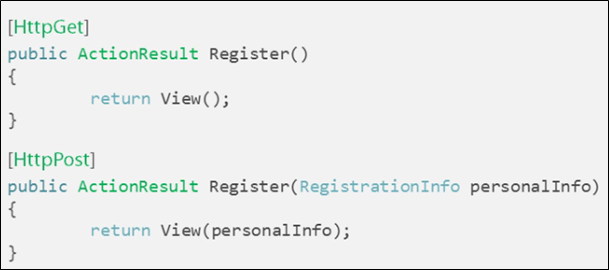
Filters
- Filters are designed to inject logic in between MVC request life cycle. Filters provide users with powerful ways to inspect, analyze, capture and instruments several things going around within MVC projects.
- A very interesting thing that how filters run at multiple points in the request life cycle compared to other components. As of MVC5, there are 5 types of filters.
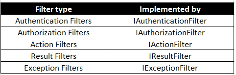
- Authentication filters are new addition from MVC 5. These filters kick in first in the request life cycle and perform the authentication logic.
- Authorization filters are executed after the Authentication filters successfully executed and authorizes users roles to ensure current user has access to request resource.
- Action filters are executed next in the request life cycle and execute any custom logic you may want to perform before and after action execution.
- Result filters are executed before and after result execution.
- Finally, the exception filters are executed when there is an exception during processing of request.
Scope of Filters
Filters can be applied to specific actions and it will run for only those specified actions. Next, filters could also be decorated at the controller level, so it run for all the action of that controller. Finally, we could also specify filters to run at a global level for all the controllers and actions.
Action Result Execution
- The journey of MVC life cycle ends with Action result execution. It’s the last and final step in MVC request life cycle. It’s also the most important one, because this is where result is sent back to browser.
- Action result execution starts after action invoker are identified an action to execute. At this point, first the Result Filters are executed before and after actual result execution.
- OnResultExecuting filter executes first in the sequence, followed by Action Result – ExecuteResult(), which takes care of executing result.
- At this point the further execution could branches in to two separate routes. If the result type is View Engine then appropriate view engine Razor or ASPX is brought in to render partial view or view.
- At the same time, if the Response is any other type, then response if directly written without bringing view engine altogether.
- Finally, ResultFilter “OnResultExecuted” is executed which could perform any custom logic written in this filter. Generally speaking, this is the last point in the MVC request life cycle to inject your custom code into the life cycle.
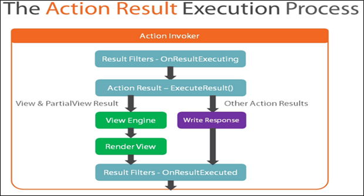
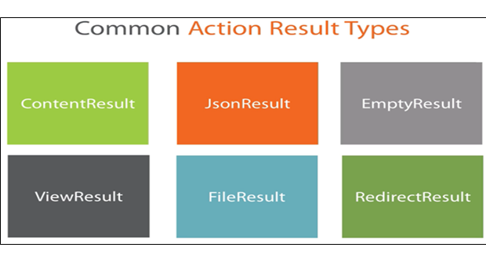
View Results and View Engine
- View results are the most common results type that as a MVC developer you might be using. On a high level, View result is responsible for returning HTML back to your browser.
- View Result employs View Engine to do this task and ensures the correct views are being rendered.
- There are two view engines that MVC provides by default, Razor View Engine and Legacy View Engine. Razor view engine is more sophisticated and fast compared to Legacy engine. Legacy view engine understands ASPX format code and emits raw HTML.
- View rendering process starts when the View Result calls the Execute Result method from its base class ViewResultBase.
- The ExecuteResult from viewResultBase calls the abstract method FindView. The child view result overrides this method and calls FindView from view engine, which either returns a view or list of locations searched to locate a view.
- Finally ViewEngineResult returns a view which has single method “Render” which actually writes response to the request. Following is the diagram that depicts this flow.
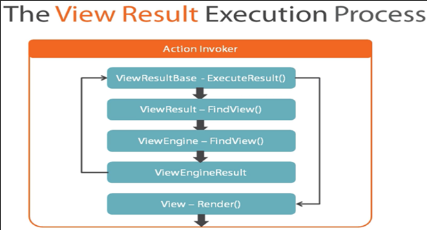
- If we look at ViewEngine, which actually implements IViewEngine interface and exposes three methods, FindView, FIndPartialView and ReleaseView.
- First two methods which deals with finding view are important to search and locate view and return it for processing. ReleaseView method simply releases any resources holding by viewengine like FileStream
Default Razor Search Locations
Once the view has been found viewengine calls its render method to emit html code for browser to display on the screen.
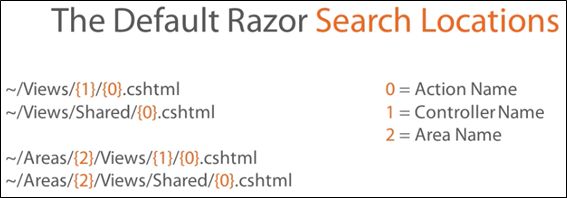